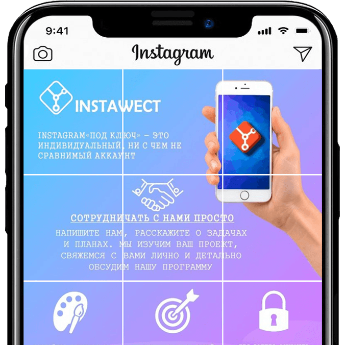

Заказ инстаграм аккаунта "под ключ" - это не один из методов черной оптимизации, когда у продвигаемого ресурса искусственно повышаются какие-либо параметры.
Мы проводим комплекс маркетинговых мероприятий, целями которых являются увеличение продаж товара и оказываемых вами услуг, увеличение узнаваемости вашей компании, привлечение новых клиентов.
СвязатьсяСоздаем ваш индивидуальный стиль для Instagram с учётом вашего логотипа и фирменных цветов.
Наши дизайнеры займутся оформлением и созданием индивидуального стиля, наши тех.сотрудники займутся раскруткой аккаунта, вам остаётся только отдыхать.
Мы работаем только с вашей целевой аудиторией, никаких ботов и коммерческих аккаунтов
Мы проверяем все комментарии и Direct сообщения. Фильтруем для вас важные сообщения и предоставляем их Вам.
Мы делаем нашу работу с особой точностью. При работе с клиентом учитываются все мелочи.
Наши специалисты знают и соблюдают все технические требования при работе с Instagram.
Нельзя накрутить живых подписчиков. Они такие же живые люди, как и вы. Их невозможно заставить купить товар, если они не хотят этого делать. Для этого мы и предоставляем услуги нашего сервиса, чтобы вызвать у них желание купить ваш товар или воспользоваться вашими услугами.
Вызвать желание купить ваш товар или воспользоваться вашими услугами - вот наша главная задача. Никто не можем гарантировать вам высокий уровень продаж, но мы гарантируем, что донесём информацию о вашем продукте и оказываемых вами услугах до потребителя.
Никто не может гарантировать вам определённый уровень продаж. Уровень продаж определяется множеством факторов, от предоставляемых вами продуктов или услуг, до описания на товара на сайте.
Когда цель не продать, а удержать аудиторию. Нет услуг и товаров, есть контент, то пакет услуг "Любитель" это ваш выбор. Данный пакет услуг подходит тематическим сообществам, лидерам мнений, блогерам и контент-мейкерам, которые продают рекламные посты.
ПодробнееЕсли вы индивидуальный предприниматель, ставящий перед собой цели увеличить прибыль, завоевать клиентов и укрепить свою позицию на потребительском рынке, то пакет услуг "Бизнесмен" это то, что вам нужно.
ПодробнееЕсли тяжёлая и долгая работы над собой, брендом и продуктом не приносит результатов, то это не значит, что вы плохой бизнесмен. Возможно, вы просто не знаете, как продвигать свой продукт или услугу, и в данном случае вам требуется пакет услуг "Профессионал".
ПодробнееЛендинг инстаграм – это мини-версия обычного лендинга, адаптированная под требования социальной сети инстаграм и размещенная на Вашем аккаунте. Основной задачей такого лендинга является продажа посетителям Вашего аккаунта, конкретного товара или услуги, внутри социальной сети инстаграм, либо привлечение трафика на внешний ресурс.
ПодробнееНастоящее Соглашение определяет условия использования Пользователями материалов и сервисов сайта www.instawect.com (далее — «Сайт»).
Пользователь подтверждает, что ознакомлен со всеми пунктами настоящего Соглашения и безусловно принимает их.
Настоящая Политика конфиденциальности персональных данных (далее – Политика конфиденциальности) действует в отношении всей информации, которую сайт www.instawect.com, может получить о Пользователе во время использования сайта.
Пользователь подтверждает, что ознакомлен со всеми пунктами настоящего Соглашения и безусловно принимает их.
Настоящая Политика конфиденциальности персональных данных (далее – Политика конфиденциальности) действует в отношении всей информации, которую сайт www.instawect.com, может получить о Пользователе во время использования сайта.
В соответствии со ст.396 Гражданского Кодекса Республики Беларусь публичный договор является одним из видов договоров, в соответствии с которым одна сторона принимает на себя обязательство по оказанию услуг в отношении неопределенного круга лиц, обратившихся с запросом на предоставление данных услуг.
Публичный договор не требует оформления на бумаге и его последующего подписания сторонами, обладает юридической силой в силу совершения сторонами определенных действий, указывающих на их волеизъявление вступить в договорные отношения.
В частности, публикация (размещение) текста публичного договора на официальном сайте компании является публичным предложением (офертой) компании, адресованным широкому кругу лиц с целью оказания определенных видов услуг (п.2. ст.407 Гражданского Кодекса Республики Беларусь).
Фактом, подтверждающим заключение публичного договора со стороны потребителя услуг, является оформление им заявки на предоставление услуг и их последующая оплата (п.3 ст.408 Гражданского Кодекса Республики Беларусь).
Публичный договор, совершенный в вышеописанном порядке, считается заключенным в простой письменной форме (п.2, п.3 ст.404 и п.3 ст.408 Гражданского Кодекса Республики Беларусь), и соответственно не требует оформления на бумаге и обладает полной юридической силой.
Настоящий Договор (далее по тексту "Договор") определяет порядок предоставления рекламных услуг, а также взаимные права, обязанности и порядок взаимоотношений между представителем сайта www.Instawect.com, именуемым в дальнейшем “Исполнитель”, и потребителем услуг (физическое лицо, юридическое лицо, индивидуальный предприниматель), именуемым в дальнейшем "Заказчик", принявшим (акцептовавшим) предложение о заключении Договора.